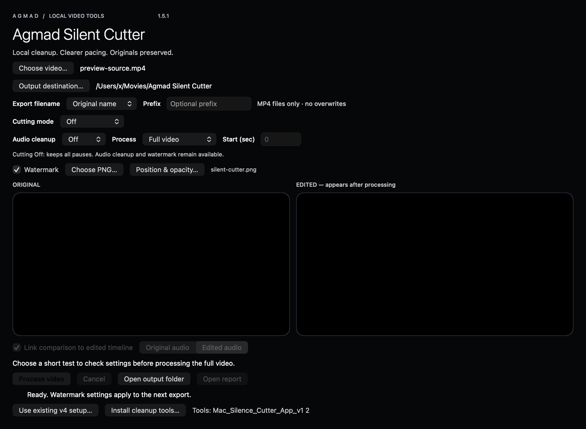

احتفظ بالوقفات عند الحاجة.
«بدون قص» مستقل عن تنظيف الصوت والعلامة المائية، مع بقاء المقياس والوضع المخصص.
احذف الوقفات، وخفّف تشتيت الصوت، وراجع النتيجة قبل مشاركتها. مسار بسيط على جهازك يحافظ على الفيديو الأصلي.
1.5.1 · جاهز للمراجعة«بدون قص» مستقل عن تنظيف الصوت والعلامة المائية، مع بقاء المقياس والوضع المخصص.
ضع شعار PNG داخل المعاينة وتحكم في الحجم والعتامة. تتطلب العلامة المائية مرحلة ترميز إضافية.
فيديوهات MP4 في مجلد واحد. الاسم الأصلي أو التاريخ أو التاريخ والاسم أو رقم تسلسلي، مع بادئة اختيارية. تبقى السجلات داخل التطبيق.
Apple Silicon · macOS 14+ · واجهة إنجليزية
تنزيل Mac — DMGتوقيع محلي؛ لم توثّقه Apple. أدوات المعالجة تُنزل أثناء الإعداد.
Intel / AMD بنظام 64-bit · واجهة عربية
تنزيل Windows — ZIPنحو 68 MB؛ دون توقيع ناشر. الإعداد الأول ينزّل أدوات إضافية.
يحتاج الإعداد الأول إلى الإنترنت. المعالجة اليومية على جهازك. فصل الموسيقى اختياري.
مقياس من −5 إلى +5، ووضع مخصص بقيم محدودة. ابدأ بهدوء واختبار 30 ثانية.
بدون تنظيف، إزالة الضوضاء، أو إزالة الموسيقى. يُعاد استخدام الصوت المنظّف عند تغيير مستوى القص فقط.
تشغيل مرتبط للأصل والنتيجة، وإحصائيات القص وسجل لكل عملية.

واجهة Mac الفعلية باستخدام فيديو اختبار اصطناعي. تتبع واجهة Windows الألوان نفسها مع أزرار عربية.
لا يرفع مسار المعالجة ملفاتك لخدمة خارجية. ينزّل الإعداد الصريح أدوات ومكتبات ونماذج اختيارية. لا يتضمن التطبيق تحليلات استخدام أو نظام حسابات.
لا. اختر بدون تنظيف للتسجيل الواضح، وإزالة الضوضاء للخلفية المستمرة. فصل الموسيقى اختياري وأثقل وقد يترك آثارًا مسموعة. تشوه الرياح الشديد قد لا يمكن إصلاحه.
أكد صاحب المشروع نجاح اختباري Mac وWindows للإصدار 1.5.1. نجح 18 اختبارًا مع فحوص الوسائط والواجهة محليًا. لم تُقدّم تفاصيل جهاز Windows أو كل الأوضاع؛ لا ندعي توافقًا شاملًا أو نجاح تشغيل CI جديد.
تحتاج نسخة Mac إلى Apple Silicon وmacOS 14+ وHomebrew للإعداد الأول. تتضمن Windows مكتبات Python وQt. توقيع Mac محلي، ولا يوجد توقيع ناشر Windows. اتبع دليل النسخة دون تعطيل حماية النظام عمومًا.
دليل التثبيت وحل المشكلات موجود داخل كل حزمة.
من أجمد. أداة محلية عملية، بحدود واضحة.